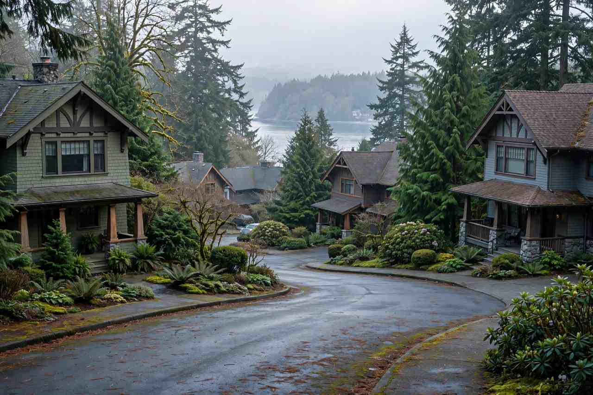

Rodent Control · Soap Lake, WA
Same-Day Rodent Control in Soap Lake, WA
Rats in the attic or mice in the kitchen in Soap Lake? Murvo provides same-day rodent control with local crews who inspect first, remove the animals already inside, and seal the entry points they used. Every job is quoted flat-rate in writing before work begins and backed by a written guarantee, covering homes and businesses across Grant County. Crews route daily across Grant County - 1 ZIP codes covered, including 98851.
24/7Availability
1ZIP codes covered
Same-dayResponse
Licensed · Upfront options · Written guarantees · Fully insured
Soap Lake at a glance
Local Rodent Control for Soap Lake, WA.
Grant County
Countyeastern Washington
RegionYakima · 74 mi
Nearest metro162 miles east of Olympia
From Olympia1
ZIP codes covered Service by service in Soap Lake
Rodent Control Services Available in Soap Lake
Rodent-only specialists serving Soap Lake and Grant County. Every service below is explained in local terms - the species involved, the entry points that matter in Craftsman and older single-family homes with crawlspaces, hillside homes, and waterfront properties, and the seasonal timing that decides whether a fix lasts.
- 01Rodent Control↗
- 02Rodent Inspection↗
- 03Rodent Removal↗
- 04Rodent Exclusion↗
- 05Rodent Proofing↗
- 06Rat Control↗
- 07Mice Control↗
- 08Mouse Removal↗
- 09Rat Removal↗
- 10Rodent Trapping↗
- 11Rodent Baiting↗
- 12Rodenticide Application↗
- 13Attic Rodent Removal↗
- 14Crawl Space Rodent Removal↗
- 15Wall Rodent Removal↗
- 16Kitchen Rodent Control↗
- 17Garage Rodent Control↗
- 18Commercial Rodent Control↗
- 19Residential Rodent Control↗
- 20Emergency Rodent Removal↗
- 21Same-Day Rodent Control↗
- 22Rodent Damage Repair↗
- 23Rodent Waste Cleanup↗
- 24Rodent Disinfection↗
- 25Rodent Odor Removal↗
- 26Dead Rodent Removal↗
- 27Rodent Dropping Cleanup↗
- 28Rodent Exclusion for Roofs↗
- 29Rodent Exclusion for Vents↗
- 30Rodent Exclusion for Chimneys↗
Rodent Control in Soap Lake
Rodent Control in Soap Lake
A single mouse sighting in a Soap Lake kitchen rarely means a single mouse. Rodents breed fast, contaminate food areas, and gnaw wiring long before the damage is obvious. Murvo responds with same-day appointments where available, a background-checked local crew, and a coordinated program of trapping, exclusion, cleanup guidance, and monitoring that keeps working after the first visit ends.
When you need rodent control in Soap Lake, the job starts with what is actually happening in your part of Grant County. Murvo crews work Soap Lake every week, so they know how Norway rat (Rattus norvegicus) and House mouse (Mus musculus) behave around Craftsman and older single-family homes with crawlspaces, hillside homes, and waterfront properties here - and where they get in: crawlspace vents and access doors, foundation gaps, sewer laterals, and gaps under doors and around utility lines. We arrive equipped for the full job, confirm the flat rate in writing before work begins, and cover the whole Soap Lake area, including Lakeview, Ephrata. No call-center runaround and no open-ended hourly billing - just a local crew, a clear plan, and a written quote you approve first. The Soap Lake crews who handle rodent control also handle the follow-through - proofing, cleanup, and monitoring - so one visit can close the whole problem.
The pattern in Grant County is predictable, so the response should be methodical. First comes identification, because Norway rat (Rattus norvegicus) and House mouse (Mus musculus) nest and feed in different places. Traps then go where travel is proven, not where it is convenient, and catches are logged by location. Sealing follows only after activity drops, using materials matched to each opening. Finally, monitoring stays in place long enough to catch a late survivor or a new arrival, and those readings decide when the program closes. That discipline is what turns a busy first week into a genuinely quiet second month for the household.
After you book, we confirm a time window and your background-checked technician arrives in a marked vehicle with identification. Once approved, trapping and sealing begin, and follow-up visits are scheduled before we leave, with the guarantee in writing. They walk the property with you, inspect inside and out, and explain what they find with photos. You receive a flat-rate written quote before any work starts. No work begins without your approval.
In most of Soap Lake, we can offer a same-day appointment for rodent control, and our lines are open 24/7 for urgent cases like scratching in the walls or a rodent in a living area. Your technician inspects first, explains the plan, and quotes a flat rate in writing before any work begins, so help starts fast without surprises. That is also why Murvo pairs removal with exclusion in Soap Lake - treating the animal without closing crawlspace vents and access doors, foundation gaps, sewer laterals, and gaps under doors and around utility lines rarely lasts.
The honest answer is that it depends on species, activity level, and how much sealing your home needs, which is why Murvo inspects first and then gives you a flat-rate quote in writing. For national context only, Angi's 2026 data averages rat and mouse removal and control at $396, typically $189 to $655; that is not a Murvo price, and your written quote is the figure you pay.
Rodent Inspection in Soap Lake
Rodent Inspection in Soap Lake
A proper rodent inspection in Soap Lake answers three questions: which species is active, where is it nesting, and how is it getting inside? Our licensed, insured technicians document runways, droppings, and damage with photos and plain-language notes, then separate urgent fixes from preventive ones. There is no pressure to proceed, and every recommendation is priced in writing first.
Homeowners in Soap Lake call Murvo for rodent inspection because the problem here is specific: Norway rat (Rattus norvegicus) pressure around Craftsman and older single-family homes with crawlspaces, hillside homes, and waterfront properties, tight access at crawlspace vents and access doors, foundation gaps, sewer laterals, and gaps under doors and around utility lines, and activity that follows the local season. Our Grant County crews diagnose the real source before recommending work, explain the options in plain language, and quote one flat rate in writing. Across Soap Lake - including Lakeview, Ephrata - every visit is backed by licensed, insured technicians and our written workmanship guarantee. The Soap Lake crews who handle rodent inspection also handle the follow-through - proofing, cleanup, and monitoring - so one visit can close the whole problem.
We listen first: when you hear noises, and where, often points straight to the most active nesting areas. Technicians then trace active runways, identify whether droppings belong to Norway rat (Rattus norvegicus) or House mouse (Mus musculus), and check insulation and wiring for damage. The visit ends with a written report covering species, entry points, contamination, and the removal and exclusion steps we recommend, each with a flat-rate price. That detail stops you paying for treatment aimed at the wrong species or the wrong part of the building.
Your part is simple: point out noises, droppings, and any past problems. Before leaving, you walk through the evidence together, discuss priorities, and decide what happens next, with no obligation attached. Ours is everything else. A background-checked technician arrives on time, protects access areas, and inspects inside and out against a set checklist. If you decide to proceed, those findings become the working plan, so no second survey is needed before approved repairs begin.
Inspections are the fastest way we help in Soap Lake: same-day appointments are available in most areas, and urgent calls are answered 24/7. A typical rodent inspection takes under an hour for most homes, and you leave the visit with photos, written findings, and a flat-rate quote for any work we recommend, so decisions never wait on us. A Soap Lake inspection confirms it on site - dropping size, gnaw marks, and entry points tell the story quickly.
Your exact rodent inspection price is confirmed before we visit, and any follow-up work is quoted as a flat rate in writing after the inspection — no hourly billing. For context, Angi's 2026 data puts a professional rodent inspection nationally at $100 to $200, often credited toward the job if you proceed.
Rodent Removal in Soap Lake
Rodent Removal in Soap Lake
Removal works best when it is species-specific. In Soap Lake, Craftsman and older single-family homes with crawlspaces, hillside homes, and waterfront properties give Norway rat (Rattus norvegicus) and House mouse (Mus musculus) warm voids, stored food, and quiet nesting corners reached through crawlspace vents and access doors, foundation gaps, sewer laterals, and gaps under doors and around utility lines. Our licensed, insured technicians assess numbers and access routes first, then set traps on proven runways and return on schedule until catches fall to zero and monitoring stays clear.
When you need rodent removal in Soap Lake, the job starts with what is actually happening in your part of Grant County. Murvo crews work Soap Lake every week, so they know how Norway rat (Rattus norvegicus) and House mouse (Mus musculus) behave around Craftsman and older single-family homes with crawlspaces, hillside homes, and waterfront properties here - and where they get in: crawlspace vents and access doors, foundation gaps, sewer laterals, and gaps under doors and around utility lines. We arrive equipped for the full job, confirm the flat rate in writing before work begins, and cover the whole Soap Lake area, including Lakeview, Ephrata. No call-center runaround and no open-ended hourly billing - just a local crew, a clear plan, and a written quote you approve first. Seasonal timing matters for rodent removal in Soap Lake: rodents surge in Soap Lake from October through March.
Removal starts with an assessment of species, numbers, and access routes across attics, wall voids, garages, and kitchens. Removal is followed immediately by entry-point exclusion, because new rodents will replace removed ones through any gap left open, and disinfection is arranged after heavy activity. Once you approve the written quote, technicians set traps along proven runways, check them on schedule, and remove animals promptly and hygienically. Catch records show progress clearly instead of relying on guesswork. Photos document each stage for you.
Same-day removal appointments are available across much of Soap Lake for active infestations. After a quick inspection, your background-checked technician explains the trapping plan and gives you a flat-rate written quote; work starts only with your approval. Follow-up checks are booked before we leave, contaminated areas are made safe, and monitoring confirms the property is clear before we sign off. Every stage is explained in plain language as work proceeds. You keep copies of all visit records.
When rodents are active indoors in Soap Lake, waiting rarely helps. Rodent removal can usually start the same day you call, our line answers 24/7 for a rodent loose in a living area, and the first visit sets traps straight away. Scheduled returns then clear and reset them until monitoring shows the home is clear. If you are seeing signs now, an inspection this week is the fastest way to know which situation you are in.
How many animals are active, which species they are, and how much sealing follows removal all shape the price, so we assess first and then quote one flat rate in writing. Angi's 2026 national context — an average of $396 and a typical $189 to $655 range for rat and mouse removal — is provided for comparison only; your written quote is the exact Murvo figure.
Rodent Exclusion in Soap Lake
Rodent Exclusion in Soap Lake
In Craftsman and older single-family homes with crawlspaces, hillside homes, and waterfront properties, exclusion is detective work as much as building work. Rub marks at crawlspace vents and access doors, foundation gaps, sewer laterals, and gaps under doors and around utility lines, droppings below a vent, and daylight under a door each point somewhere different in Grant County homes. Our technicians follow those clues for Norway rat (Rattus norvegicus) and House mouse (Mus musculus), prioritize active openings, and leave inactive weaknesses clearly noted.
Homeowners in Soap Lake call Murvo for rodent exclusion because the problem here is specific: Norway rat (Rattus norvegicus) pressure around Craftsman and older single-family homes with crawlspaces, hillside homes, and waterfront properties, tight access at crawlspace vents and access doors, foundation gaps, sewer laterals, and gaps under doors and around utility lines, and activity that follows the local season. Our Grant County crews diagnose the real source before recommending work, explain the options in plain language, and quote one flat rate in writing. Across Soap Lake - including Lakeview, Ephrata - every visit is backed by licensed, insured technicians and our written workmanship guarantee. In Soap Lake, rodent exclusion calls most often involve Craftsman and older single-family homes with crawlspaces, hillside homes, and waterfront properties, where crawlspace vents and access doors, foundation gaps, sewer laterals, and gaps under doors and around utility lines decide whether the fix holds.
Exclusion begins with a full exterior survey, paying particular attention to junctions where different materials meet, because those seams and transitions open up as a building ages and settles. Each opening is sealed with materials matched to it: copper mesh packed into gaps, hardware cloth over vents, metal flashing at roof junctions, and quality sealants for smaller cracks. Door sweeps are fitted, pipe gaps closed, and specialist roof, vent, and chimney sealing finished to weatherproof standards. Active animals are trapped out first.
The visit starts with a check that no animals remain inside, using trapping and monitoring where needed. A later re-check confirms the seals are holding and activity has stopped. Once clear, your background-checked crew seals the agreed openings with chew-resistant materials, working cleanly around your home. Before leaving, we show you each finished seal, explain how it was protected, and confirm the guarantee paperwork. You approve the finished work before we close the job.
The first step is a survey, and in Soap Lake we can often schedule that survey the same day you call about rodent exclusion. Sealing follows once active animals are cleared — nothing is ever sealed inside — and most homes are fully sealed within days, with entry points near wiring or food areas handled first. The written quote for your Soap Lake property will spell out exactly which of these applies before any work starts.
After the survey of your Soap Lake home, every opening that needs sealing is listed and priced as one flat-rate written quote, so you pay only for the work your property needs. For national context, Angi's 2026 data puts basic exclusion at $200 to $600 depending on access and the number of openings; that benchmark is not a Murvo price.
Rodent Proofing in Soap Lake
Rodent Proofing in Soap Lake
When is the right season for rodent proofing in Soap Lake? Before cold weather sends rodents searching for indoor warmth, though any quiet month works well. Our licensed, insured technicians harden the structure, advise on food storage and vegetation, and leave a seasonal re-check booked, all backed by a written workmanship guarantee.
Homeowners in Soap Lake call Murvo for rodent proofing because the problem here is specific: Norway rat (Rattus norvegicus) pressure around Craftsman and older single-family homes with crawlspaces, hillside homes, and waterfront properties, tight access at crawlspace vents and access doors, foundation gaps, sewer laterals, and gaps under doors and around utility lines, and activity that follows the local season. Our Grant County crews diagnose the real source before recommending work, explain the options in plain language, and quote one flat rate in writing. Across Soap Lake - including Lakeview, Ephrata - every visit is backed by licensed, insured technicians and our written workmanship guarantee. Around Cascade Valley, Banks Lake South, Quincy, the pattern is similar: House mouse (Mus musculus) finds crawlspace vents and access doors, foundation gaps, sewer laterals, and gaps under doors and around utility lines first, and lasting rodent proofing has to close those routes.
Proofing starts with a whole-property assessment inside and out, from overhanging branches and cluttered garages to unsealed vents and gaps under doors. We also address attractants: securing pet food and bird seed storage, trimming vegetation away from walls, and clearing harborage. Every item is prioritized so essential work happens first. The plan typically combines structural sealing of utility entries and foundation cracks with mesh screening on vents, chimneys, and rooflines, plus door sweeps where light shows underneath. Photos show each weakness we find.
On proofing day, expect one tidy visit for most homes. Agreed sealing and screening are completed, sweeps are fitted, and attractant advice is tailored to your garage, kitchen, and yard. Before leaving, you walk the finished work together, confirm the guarantee in writing, and book the seasonal re-check that keeps the protection current year after year. The re-check is not a formality, because it catches shifted sweeps, damaged screens, and new gaps before rodents discover them first.
Proofing is planned work rather than an emergency, but you can still move fast: rodent proofing surveys in Soap Lake are often available the same day and always within a few days. Once you approve the plan, most work is finished in a single visit, ideally before colder weather drives rodents indoors. The written quote for your Soap Lake property will spell out exactly which of these applies before any work starts.
For national context, Angi's 2026 data puts exclusion, the core of proofing, at $200 to $600 for basic work. That figure is a benchmark, not a Murvo price. After surveying your Soap Lake property, we separate quick homeowner wins from specialist sealing and quote the professional work as one flat rate in writing, so you can stage spending sensibly.
Rat Control in Soap Lake
Rat Control in Soap Lake
What separates control from a temporary lull? Monitoring that continues after the last catch. Murvo keeps checking until routes stay quiet, removes trapped rats hygienically, and finishes with exclusion so replacements cannot follow the same path. Licensed, insured technicians document every visit, and urgent calls are answered 24/7.
Homeowners in Soap Lake call Murvo for rat control because the problem here is specific: Norway rat (Rattus norvegicus) pressure around Craftsman and older single-family homes with crawlspaces, hillside homes, and waterfront properties, tight access at crawlspace vents and access doors, foundation gaps, sewer laterals, and gaps under doors and around utility lines, and activity that follows the local season. Our Grant County crews diagnose the real source before recommending work, explain the options in plain language, and quote one flat rate in writing. Across Soap Lake - including Lakeview, Ephrata - every visit is backed by licensed, insured technicians and our written workmanship guarantee. In Soap Lake, rat control calls most often involve Craftsman and older single-family homes with crawlspaces, hillside homes, and waterfront properties, where crawlspace vents and access doors, foundation gaps, sewer laterals, and gaps under doors and around utility lines decide whether the fix holds.
Wary rats punish rushed trapping, so the program begins with patience. Exclusion follows at rooflines and entry points, and monitoring devices remain in place afterwards to verify that quiet routes have genuinely stayed quiet. Unset traps are placed on confirmed runways and pre-baited until feeding becomes confident and regular. Only then are traps set, checked frequently, and repositioned as the pattern shifts. Catches are recorded by location, giving a clear picture of colony size and movement. Counts matter here, because a falling catch trend tells a different story from a single lucky night.
Between visits, keep pet food secured and avoid moving any traps, even slightly, since position matters. The program closes only when monitoring confirms activity has ended and exclusion is finished, with your guarantee confirmed in writing at sign-off. Your background-checked technician returns on schedule, removes trapped rats promptly, adjusts placements, and reports counts plainly. Keep gates and access points available on scheduled days where possible, since uninterrupted checks keep the program on its planned timetable.
Call day or night — urgent rat control calls in Soap Lake are answered 24/7, and a same-day inspection can usually start the program. Pre-baiting begins on that first visit once you approve the written quote, traps are set when rats are feeding confidently, and scheduled checks continue until activity stops. In Grant County, most cases involve the Norway rat (Rattus norvegicus) and the House mouse (Mus musculus), so the inspection focuses on their routes first.
Species, colony size, and the number of entry points to seal all affect rat work, which is why Murvo inspects first and quotes one flat rate in writing. Angi's 2026 figures, given for national context only, average rat control and removal at $396 and typically run $189 to $655; the written quote for your Soap Lake home is the exact price.
Mice Control in Soap Lake
Mice Control in Soap Lake
Most Soap Lake mouse problems announce themselves in the kitchen first: droppings in a drawer, a chewed corner on stored food, movement behind the kickboard. Murvo surveys those hotspots, clusters traps where mice actually travel, seals gaps, and covers the program with one flat-rate written quote approved in advance.
Homeowners in Soap Lake call Murvo for mice control because the problem here is specific: Norway rat (Rattus norvegicus) pressure around Craftsman and older single-family homes with crawlspaces, hillside homes, and waterfront properties, tight access at crawlspace vents and access doors, foundation gaps, sewer laterals, and gaps under doors and around utility lines, and activity that follows the local season. Our Grant County crews diagnose the real source before recommending work, explain the options in plain language, and quote one flat rate in writing. Across Soap Lake - including Lakeview, Ephrata - every visit is backed by licensed, insured technicians and our written workmanship guarantee. Homes near Cascade Valley tend to show activity first in Soap Lake, which is why inspections start with crawlspace vents and access doors, foundation gaps, sewer laterals, and gaps under doors and around utility lines.
Hygiene is part of control, not an afterthought. Droppings in cabinets are never dry-swept; surfaces are disinfected first, following careful practice, so contamination is not pushed into the air, and nesting debris is bagged and removed. Technicians also review how food, pet supplies, and bird seed are stored, since an open supply restarts activity quickly. The program favors traps over bait throughout, which keeps family kitchens safer and makes every result countable and visible. Follow-up monitoring then verifies the kitchen, attic, and voids together, rather than treating each room in isolation.
After booking, we confirm your time window and any rooms where you have seen droppings or heard scratching. On arrival, your background-checked technician inspects, sets clustered traps at proven hotspots, and talks you through pet and child safety around placements. Return visits clear and reset traps, then sealing is completed and the written guarantee confirmed at the final check. You approve the plan and price before trapping starts. No surprises are added later.
Mice programs move quickly in Soap Lake: a mice control survey can often be arranged the same day you call, and traps are set on that first visit once you approve the quote. Because mice investigate new objects fast, catches usually begin quickly, and scheduled check visits follow until a final confirmation shows activity has fully stopped. Murvo's Soap Lake crews explain the finding either way, and the flat-rate quote leaves the decision with you.
The number of rooms affected and the amount of sealing required set the price, so Murvo surveys first and quotes one flat rate in writing. For national context only, Angi's 2026 data averages rat and mouse control and removal at $396, typically $189 to $655 — not a Murvo price; your written quote is exact.
Mouse Removal in Soap Lake
Mouse Removal in Soap Lake
You found droppings in a cabinet or heard scratching in the attic of your Soap Lake home, and you want the mice out, not managed indefinitely. Murvo's mouse removal locates nests and feeding areas room by room, runs a multi-trap program until catches reach zero, and seals access points behind it. One flat-rate written quote is agreed before work begins.
When you need mouse removal in Soap Lake, the job starts with what is actually happening in your part of Grant County. Murvo crews work Soap Lake every week, so they know how Norway rat (Rattus norvegicus) and House mouse (Mus musculus) behave around Craftsman and older single-family homes with crawlspaces, hillside homes, and waterfront properties here - and where they get in: crawlspace vents and access doors, foundation gaps, sewer laterals, and gaps under doors and around utility lines. We arrive equipped for the full job, confirm the flat rate in writing before work begins, and cover the whole Soap Lake area, including Lakeview, Ephrata. No call-center runaround and no open-ended hourly billing - just a local crew, a clear plan, and a written quote you approve first. Coverage for mouse removal spans 1 ZIP codes in Grant County, including 98851.
The survey comes first, and it is deliberately thorough. Lofts, under-floor voids, cabinets, and the spaces behind kitchen units are checked for nests, droppings, and stored food caches. Traps are then set in multiples at proven points, because a single trap rarely reflects colony size. Returns are scheduled tightly: catches are cleared, traps reset, and numbers tracked until they fall to zero and stay there across a confirming check before sealing begins. Photographs of nesting sites help here, because they reveal how far activity had spread before trapping began.
For mice active in living areas, call and we will aim for a same-day start where available. The first visit surveys nesting sites, sets out the multi-trap plan, and confirms your written quote. Traps are placed only after approval, return visits are booked ahead, and you receive a plain update after every check without chasing. Rooms are returned to normal use as soon as their checks are clear, and we tell you plainly which areas those are.
For mice active in kitchens or living areas of your Soap Lake home, mouse removal can often begin the same day you call. That first visit surveys nesting sites and sets traps as soon as you approve the quote, and because mice investigate traps quickly, catches usually start fast. Return visits continue until numbers reach zero. The written quote for your Soap Lake property will spell out exactly which of these applies before any work starts.
Rooms involved and sealing needed determine the cost of removal, so we survey first and agree a flat rate in writing before work begins. As national context only, Angi's 2026 data averages rat and mouse removal at $396, with a typical range of $189 to $655; that benchmark is not a Murvo price, and your written quote covers your exact program.
Rat Removal in Soap Lake
Rat Removal in Soap Lake
A hurried rat removal that misses breeding females or a hidden nest simply restarts the cycle. Murvo's rat removal in Soap Lake starts with a species and colony-size assessment, uses pre-baited traps on confirmed runways, and removes animals hygienically across repeat visits. A flat-rate written quote is agreed before trapping starts.
When you need rat removal in Soap Lake, the job starts with what is actually happening in your part of Grant County. Murvo crews work Soap Lake every week, so they know how Norway rat (Rattus norvegicus) and House mouse (Mus musculus) behave around Craftsman and older single-family homes with crawlspaces, hillside homes, and waterfront properties here - and where they get in: crawlspace vents and access doors, foundation gaps, sewer laterals, and gaps under doors and around utility lines. We arrive equipped for the full job, confirm the flat rate in writing before work begins, and cover the whole Soap Lake area, including Lakeview, Ephrata. No call-center runaround and no open-ended hourly billing - just a local crew, a clear plan, and a written quote you approve first. The Soap Lake crews who handle rat removal also handle the follow-through - proofing, cleanup, and monitoring - so one visit can close the whole problem.
Scale determines everything, so assessment precedes action. Pre-baiting unset traps then builds feeding confidence in these naturally cautious animals. Once set, traps are checked frequently, animals are removed hygienically, and placements shift as activity contracts toward its last pockets. Attic colonies receive dedicated work overhead, while any carcass in a void is retrieved before odor develops. Technicians establish species, estimate colony size from droppings and runways, and locate harborage before placing a single trap. Visit notes record weather and access too, since both affect rat movement and help explain any slower nights.
Book and we will agree a visit time, with same-day appointments for active infestations where available. Your technician assesses the colony, explains each stage, and confirms the written quote before pre-baiting begins. Repeat visits are scheduled in advance, progress is reported after each one, and sealing follows once catches stop and monitoring stays clear. Every visit is documented with counts and locations, so the final clearance rests on a complete record rather than a single quiet check.
Rats in a living area cannot wait for a routine slot. In Soap Lake, rat removal can usually start the same day you call and our line answers 24/7 for urgent cases. Pre-baiting starts on the first visit after you approve the written quote, traps are set once rats feed confidently — typically within days — and frequent returns run until monitoring confirms the colony is gone. That is also why Murvo pairs removal with exclusion in Soap Lake - treating the animal without closing crawlspace vents and access doors, foundation gaps, sewer laterals, and gaps under doors and around utility lines rarely lasts.
Rat removal pricing depends on colony size, access, and the sealing needed afterwards, so Murvo assesses your property first and quotes a flat rate in writing. For national context only, Angi's 2026 data averages rat removal at $396, typically $189 to $655. That is a benchmark, not a Murvo price, and your written quote covers the full program described.
Rodent Trapping in Soap Lake
Rodent Trapping in Soap Lake
Good trapping is species craft, not guesswork. In Soap Lake, wary Norway rat (Rattus norvegicus) need unset traps pre-baited for several days before they will feed confidently, while House mouse (Mus musculus) respond to clustered traps at activity hotspots. Our technicians match trap types and baits to the species and setting, from food lures in kitchens to robust devices for larger rats in basements.
When you need rodent trapping in Soap Lake, the job starts with what is actually happening in your part of Grant County. Murvo crews work Soap Lake every week, so they know how Norway rat (Rattus norvegicus) and House mouse (Mus musculus) behave around Craftsman and older single-family homes with crawlspaces, hillside homes, and waterfront properties here - and where they get in: crawlspace vents and access doors, foundation gaps, sewer laterals, and gaps under doors and around utility lines. We arrive equipped for the full job, confirm the flat rate in writing before work begins, and cover the whole Soap Lake area, including Lakeview, Ephrata. No call-center runaround and no open-ended hourly billing - just a local crew, a clear plan, and a written quote you approve first. Coverage for rodent trapping spans 1 ZIP codes in Grant County, including 98851.
Trap selection covers snap traps for quick, humane dispatch, multi-catch devices for busy mouse routes, and live-capture options where you prefer release away from the home. Baits and lures are matched to species and location, and all devices are positioned with pet and child safety in mind and explained to your household. As catches fall, we recommend exclusion sealing, plus droppings cleanup for affected areas, moving the program from active trapping to monitoring and final sign-off. Every device location is mapped for you.
Book rodent trapping in Soap Lake and a technician can often start the same day. When numbers reach zero, we confirm monitoring is clear and discuss sealing. The first visit inspects, maps activity, and places or pre-baits traps; you approve a flat-rate written quote covering the program including check visits before we proceed. Scheduled returns clear and reset traps and share catch records with you. The finished program is guaranteed in writing.
In Soap Lake, rodent trapping can usually start the same day you call, with traps placed or pre-baiting begun on the first visit after you approve the quote. Mice often investigate within the first night; wary rats need a few days of pre-baiting before traps are set. Scheduled check visits then keep catches moving until numbers reach zero. In Grant County, activity follows the local season, so timing the work matters as much as the method.
Trapping is usually quoted as part of a complete removal program rather than by the trap, and the price depends on species, activity level, and how many check visits are needed. Murvo inspects first and quotes one flat rate in writing covering the program and its check visits, so there are no per-visit surprises and no hourly billing at any stage.
Rodent Baiting in Soap Lake
Rodent Baiting in Soap Lake
State rules shape how baiting works in Washington: some states restrict anticoagulant rodenticides, and Murvo follows the strictest applicable limits on every job. Before any station is placed at your Soap Lake property, a technician maps activity, reviews pet and child concerns with you, and explains exactly what to watch for between monitoring visits. Nothing is placed without that conversation.
Homeowners in Soap Lake call Murvo for rodent baiting because the problem here is specific: Norway rat (Rattus norvegicus) pressure around Craftsman and older single-family homes with crawlspaces, hillside homes, and waterfront properties, tight access at crawlspace vents and access doors, foundation gaps, sewer laterals, and gaps under doors and around utility lines, and activity that follows the local season. Our Grant County crews diagnose the real source before recommending work, explain the options in plain language, and quote one flat rate in writing. Across Soap Lake - including Lakeview, Ephrata - every visit is backed by licensed, insured technicians and our written workmanship guarantee. Homes near Cascade Valley tend to show activity first in Soap Lake, which is why inspections start with crawlspace vents and access doors, foundation gaps, sewer laterals, and gaps under doors and around utility lines.
Baiting follows Inspect, Remove, Exclude, Clean, and Monitor, and it never stands alone. After a full inspection maps activity, background-checked technicians choose station locations along runways, fence lines, and entry points, away from pet play areas and food storage. Every station is tamper-resistant, locked, labeled, and anchored, with placement photographed for your records. We return on schedule to check consumption, record amounts, and adjust positions, and stations are removed when activity ends rather than left indefinitely. Loose bait is never used anywhere.
After booking, we confirm a time window and talk through where pets play and children gather, so placement planning starts before we arrive. Follow-up checks are booked ahead, consumption is reported to you, and the program ends with stations removed and sealing recommendations confirmed. On the day, your background-checked technician inspects first, agrees each station location with you, and secures and labels every unit. Nothing is placed anywhere you have not approved.
Deliberate setup matters more than speed with rodent baiting, but the first step is still fast: an inspection in Soap Lake can often be arranged the same day you call. Stations are placed only after activity is mapped and you approve the written quote and each location, then monitoring runs on a fixed schedule until consumption stops and activity is confirmed clear. Around Soap Lake, Craftsman and older single-family homes with crawlspaces, hillside homes, and waterfront properties give rodents the most cover, which is why entry points get checked before traps are set.
How many locked stations your property needs and how long monitoring runs determine the cost, so Murvo inspects and maps activity first, then quotes one flat rate in writing covering placement and scheduled checks. There are no per-visit surprises, and because the approach is exclusion-first, the aim is to reduce and eventually remove stations rather than maintain them forever.
Rodenticide Application in Soap Lake
Rodenticide Application in Soap Lake
Rodenticides are powerful products that can harm pets, children, and wildlife if misused, so Murvo treats rodenticide application in Soap Lake as a last resort, never a first step. Products are placed only inside tamper-resistant locked stations, never as loose pellets or open trays, and only after inspection confirms trapping and exclusion alone will not solve the problem.
In Soap Lake, rodenticide application is not a generic spray-and-go service. Rodents exploit crawlspace vents and access doors, foundation gaps, sewer laterals, and gaps under doors and around utility lines in Craftsman and older single-family homes with crawlspaces, hillside homes, and waterfront properties, and a fix that ignores those routes does not last. Murvo's Soap Lake team inspects first, shows you the evidence - droppings, gnaw marks, entry gaps - and then lays out the work with a flat-rate written quote. We serve all of Grant County from Soap Lake, including Lakeview, Ephrata, and every job is covered by our written workmanship guarantee. Homes near Cascade Valley tend to show activity first in Soap Lake, which is why inspections start with crawlspace vents and access doors, foundation gaps, sewer laterals, and gaps under doors and around utility lines.
The first decision is whether application is justified, and often it is not. Where treatment is justified, stations are mapped, anchored, and labeled, products remain inside locked units at all times, and scheduled checks record amounts precisely. Monitoring data then governs whether treatment continues, changes, or stops in favor of proofing alone. Inspection confirms species and activity, then trapping and exclusion are weighed honestly; if those methods can solve the problem safely, they are recommended instead. If consumption patterns look unusual, technicians investigate rather than simply refilling, because unexpected patterns can signal a different species.
After booking, we discuss children, pets, livestock, and wildlife at your property before the visit, so product decisions are informed from the start. On arrival, your background-checked technician inspects, talks you through the plan and label information, and only applies product once you approve the written quote. Scheduled checks follow, amounts are recorded and reported, and stations are removed when activity is confirmed clear. Safety information stays with you throughout the program.
In Soap Lake, rodenticide application begins with an inspection we can often schedule the same day you call, because no responsible application happens without one. If treatment is justified and you approve the written quote, locked stations are installed on that visit. Monitoring then runs on schedule, and treatment stops as soon as data shows activity has ended. Around Soap Lake, Craftsman and older single-family homes with crawlspaces, hillside homes, and waterfront properties give rodents the most cover, which is why entry points get checked before traps are set.
Station numbers, the product permitted under Washington rules, and the length of monitoring all shape the price. Murvo inspects first, explains whether trapping or exclusion could avoid chemical control entirely, and then quotes one flat rate in writing before work begins. That quote covers scheduled monitoring visits, so there are no per-visit surprises later.
Attic Rodent Removal in Soap Lake
Attic Rodent Removal in Soap Lake
Scratching overhead at night in Soap Lake usually means Norway rat (Rattus norvegicus) climbing to the roofline or House mouse (Mus musculus) slipping through vent gaps into your attic. Murvo's attic rodent removal inspects the attic, roof, and eaves, traps active animals up there, and seals the roofline behind them. Same-day visits are prioritized when chewed wiring is found, because that damage is a genuine fire risk.
When you need attic rodent removal in Soap Lake, the job starts with what is actually happening in your part of Grant County. Murvo crews work Soap Lake every week, so they know how Norway rat (Rattus norvegicus) and House mouse (Mus musculus) behave around Craftsman and older single-family homes with crawlspaces, hillside homes, and waterfront properties here - and where they get in: crawlspace vents and access doors, foundation gaps, sewer laterals, and gaps under doors and around utility lines. We arrive equipped for the full job, confirm the flat rate in writing before work begins, and cover the whole Soap Lake area, including Lakeview, Ephrata. No call-center runaround and no open-ended hourly billing - just a local crew, a clear plan, and a written quote you approve first. Around Cascade Valley, Banks Lake South, Quincy, the pattern is similar: House mouse (Mus musculus) finds crawlspace vents and access doors, foundation gaps, sewer laterals, and gaps under doors and around utility lines first, and lasting attic rodent removal has to close those routes.
Cleanup overhead demands care. Poison is avoided in attics deliberately, since animals dying in inaccessible corners create odor and retrieval problems. Adjoining crawl spaces are checked before the job is signed off as complete. Droppings and nesting material are never dry-swept, because that can spread contamination into the air; surfaces are disinfected first, then waste is removed hygienically by technicians in protective equipment. Contaminated insulation is assessed honestly, with repair referrals where replacement is warranted. The result is a documented attic: cleared, sealed, cleaned where needed, and verified quiet before closure.
Before the visit, clear access to the attic hatch and note when noises are loudest. The job closes with a monitoring check, a walkthrough of photographs, and guarantee paperwork in your hands. On arrival, your background-checked technician explains the plan, starts trapping once the quote is approved, and reports insulation and wiring findings plainly. After sealing, a quiet attic is verified rather than assumed, and the monitoring result is reported to you before the job closes.
Overhead scratching in Soap Lake often gets a same-day attic rodent removal visit, and attics with chewed wiring are prioritized because of the fire risk. Trapping starts on the first visit once you approve the written quote, checks run on schedule, and most attics are cleared and sealed within days. Monitoring stays in place briefly afterwards to confirm nothing remains inside. The written quote for your Soap Lake property will spell out exactly which of these applies before any work starts.
Activity levels, roofline sealing, and whether contaminated insulation needs cleanup all affect attic pricing, so Murvo inspects first and quotes one flat rate in writing for the removal program. Cleanup options are priced separately in writing before you decide, so nothing is added once work is underway.
Crawl Space Rodent Removal in Soap Lake
Crawl Space Rodent Removal in Soap Lake
Why avoid poison beneath a home? Pets can access crawl spaces, and carcasses hidden under a house are difficult to retrieve. Murvo favors trapping and physical exclusion instead, delivered by licensed, insured technicians who photograph every sealed opening, refit access panels securely, and confirm results with monitoring under a written guarantee.
Homeowners in Soap Lake call Murvo for crawl space rodent removal because the problem here is specific: Norway rat (Rattus norvegicus) pressure around Craftsman and older single-family homes with crawlspaces, hillside homes, and waterfront properties, tight access at crawlspace vents and access doors, foundation gaps, sewer laterals, and gaps under doors and around utility lines, and activity that follows the local season. Our Grant County crews diagnose the real source before recommending work, explain the options in plain language, and quote one flat rate in writing. Across Soap Lake - including Lakeview, Ephrata - every visit is backed by licensed, insured technicians and our written workmanship guarantee. In Soap Lake, crawl space rodent removal calls most often involve Craftsman and older single-family homes with crawlspaces, hillside homes, and waterfront properties, where crawlspace vents and access doors, foundation gaps, sewer laterals, and gaps under doors and around utility lines decide whether the fix holds.
Cleanup beneath a home follows careful practice throughout. Technicians also trace connections upward through wall voids, checking whether activity reaches the attic, and report moisture issues with practical recommendations. Photographs of every finished seal accompany your guarantee paperwork, creating a record of exactly what was closed. Droppings and nesting debris are never dry-swept, since disturbing them can spread contamination; surfaces are disinfected first, then waste is bagged and removed by technicians wearing protective equipment. Vent and pier sealing is checked from inside the space, not assumed sound from a glance outside.
Before the visit, unlock crawl-space access and mention any known leaks or standing water. Your background-checked technician inspects with protective equipment, sets traps at active areas after approval, and books follow-up visits ahead. Sign-off includes a walkthrough of the documented results, photographs of finished sealing, and your guarantee confirmed in writing for the completed work. Moisture findings are included in the closing notes, since fixing leaks and standing water lowers rodent pressure long after removal ends.
For crawl space rodent removal in Soap Lake, inspections are usually arranged within a few days — and sooner when odors are drifting into living areas or activity sounds heavy. Trapping begins on the first visit after you approve the written quote, clearance and sealing follow in sequence, and monitoring stays in place until the space below is confirmed quiet. A Soap Lake inspection confirms it on site - dropping size, gnaw marks, and entry points tell the story quickly.
Crawl-space costs depend on access, how many vents and gaps need sealing, and whether waste cleanup is required, so Murvo inspects first and quotes one flat rate in writing. If extra vents need sealing within the agreed scope, there are no surprises, and cleanup options are priced in writing before you decide whether to include them.
Wall Rodent Removal in Soap Lake
Wall Rodent Removal in Soap Lake
We deliberately avoid poison for wall problems in Soap Lake, because a poisoned rodent dying in a void creates exactly the odor problem homeowners fear. Trapping and exclusion are cleaner and safer around kids and pets. After removal, a quiet-wall check at different times of day confirms no second animal remains hidden in a connected void before we finish.
When you need wall rodent removal in Soap Lake, the job starts with what is actually happening in your part of Grant County. Murvo crews work Soap Lake every week, so they know how Norway rat (Rattus norvegicus) and House mouse (Mus musculus) behave around Craftsman and older single-family homes with crawlspaces, hillside homes, and waterfront properties here - and where they get in: crawlspace vents and access doors, foundation gaps, sewer laterals, and gaps under doors and around utility lines. We arrive equipped for the full job, confirm the flat rate in writing before work begins, and cover the whole Soap Lake area, including Lakeview, Ephrata. No call-center runaround and no open-ended hourly billing - just a local crew, a clear plan, and a written quote you approve first. Coverage for wall rodent removal spans 1 ZIP codes in Grant County, including 98851.
Once the void is clear, the route gets closed and the space made safe. Monitoring at key access points and repeat quiet-wall checks then confirm silence before any minimal, agreed access cut is made good. Baseboard and pipe gaps linked to kitchen activity are sealed as part of wider proofing. If a rodent has died inside, retrieval is followed by sanitation: contaminated material is never dry-swept, surfaces are disinfected first, and odor treatment discourages new animals from investigating. Only then is the job closed, with the monitoring record and any sanitation work documented for you.
Book wall rodent removal in Soap Lake and we will schedule a locating visit, often the same day for loud or persistent wall noise. Your technician traces the activity, explains exactly where the animal is traveling, and confirms a flat-rate written quote before any access work, so wall work never becomes an open-ended bill. Trapping and any agreed access follow, then sealing, sanitation, and monitoring complete the job. Your written guarantee covers the completed work.
Persistent wall scratching in Soap Lake often qualifies for a same-day locating visit, especially when it is keeping you awake. On that first visit, once you approve the written quote, traps are set at void access points; because rodents travel the void nightly, results usually follow within days. Quiet-wall checks confirm the silence before we sign off. In Grant County, activity follows the local season, so timing the work matters as much as the method.
How precisely the activity can be located, and whether a minimal access cut turns out to be needed, decide the price of wall work. Murvo therefore locates the activity first and quotes a flat rate in writing, covering the trapping, sealing, and monitoring in your plan, so wall access never becomes an open-ended bill.
Kitchen Rodent Control in Soap Lake
Kitchen Rodent Control in Soap Lake
Droppings in cabinets, gnawed packaging or grease marks along the kickboards mean Norway rat (Rattus norvegicus) or House mouse (Mus musculus) are feeding where your family eats. Our kitchen rodent control in Soap Lake removes rodents safely, seals gaps behind appliances and pipes, and helps keep food preparation areas clean, hygienic and properly protected.
When you need kitchen rodent control in Soap Lake, the job starts with what is actually happening in your part of Grant County. Murvo crews work Soap Lake every week, so they know how Norway rat (Rattus norvegicus) and House mouse (Mus musculus) behave around Craftsman and older single-family homes with crawlspaces, hillside homes, and waterfront properties here - and where they get in: crawlspace vents and access doors, foundation gaps, sewer laterals, and gaps under doors and around utility lines. We arrive equipped for the full job, confirm the flat rate in writing before work begins, and cover the whole Soap Lake area, including Lakeview, Ephrata. No call-center runaround and no open-ended hourly billing - just a local crew, a clear plan, and a written quote you approve first. Seasonal timing matters for kitchen rodent control in Soap Lake: rodents surge in Soap Lake from October through March.
Work begins with a kitchen-focused inspection behind fridges, ovens and sinks, inside cabinets and along kickboards, reading droppings and grease marks to identify the species and its routes. We then trace activity into wall voids and adjoining rooms, seal gaps around waste pipes and cabinet holes with durable materials, disinfect contaminated areas, and monitor until activity stops completely. Discreet traps are placed away from food preparation surfaces, never loose poison where children, pets or food could reach it. Nothing is left to guesswork at any stage.
Booking takes one call. We return to check traps and monitoring points, adjust placement if needed, and confirm the kitchen is clear. Every stage is covered by our written workmanship guarantee. Your technician arrives as arranged, confirms where rodents are feeding and traveling, and talks you through a clear plan with one written flat-rate price. Traps are set discreetly, entry gaps sealed and food areas cleaned down. Nothing starts until you have approved the written quote.
You can reach us by phone 24/7, and reports of droppings close to food preparation surfaces are given priority when we schedule. A same-day visit in Soap Lake may be possible in many cases, depending on technician availability. When you call, tell us what you found and we will offer the earliest appointment available. That is also why Murvo pairs removal with exclusion in Soap Lake - treating the animal without closing crawlspace vents and access doors, foundation gaps, sewer laterals, and gaps under doors and around utility lines rarely lasts.
Cost depends on how many rodents are active, where they are entering, and how much sealing and cleanup the kitchen needs. Murvo inspects first, then gives one flat-rate written quote covering trapping, sealing and follow-up monitoring, with no hourly billing or add-on surprises. You approve the full price before any work begins, and the quote is backed by our written workmanship guarantee.
Garage Rodent Control in Soap Lake
Garage Rodent Control in Soap Lake
Garages give Norway rat (Rattus norvegicus) and House mouse (Mus musculus) shelter, stored food and a quiet route into the house, especially through gaps under the door. Our garage rodent control in Soap Lake removes rodents, seals door and wall entry points, and protects stored belongings, vehicles and wiring from gnaw damage. That is the standard Murvo works to in Washington.
In Soap Lake, garage rodent control is not a generic spray-and-go service. Rodents exploit crawlspace vents and access doors, foundation gaps, sewer laterals, and gaps under doors and around utility lines in Craftsman and older single-family homes with crawlspaces, hillside homes, and waterfront properties, and a fix that ignores those routes does not last. Murvo's Soap Lake team inspects first, shows you the evidence - droppings, gnaw marks, entry gaps - and then lays out the work with a flat-rate written quote. We serve all of Grant County from Soap Lake, including Lakeview, Ephrata, and every job is covered by our written workmanship guarantee. Around Cascade Valley, Banks Lake South, Quincy, the pattern is similar: House mouse (Mus musculus) finds crawlspace vents and access doors, foundation gaps, sewer laterals, and gaps under doors and around utility lines first, and lasting garage rodent control has to close those routes.
We start by reading the evidence: droppings along edges, shredded cardboard, grease marks and entry gaps at crawlspace vents and access doors, foundation gaps, sewer laterals, and gaps under doors and around utility lines. Because garages feed activity into the rest of the home, adjoining rooms are checked too, so the problem is solved rather than displaced. Trapping is placed along walls and behind storage where rodents travel, checked and adjusted on follow-up visits. Next comes proofing: door seals, vents and utility penetrations sealed, damaged materials removed, and attractants such as open pet food addressed. Your technician explains each stage as the work progresses.
After booking, we agree access arrangements for vehicles and stored items. Monitoring continues afterwards, and we report progress at each visit. If activity persists within the guarantee terms, we return and address it, as set out in your written guarantee. Your technician inspects, quotes in writing, and only starts once you approve. Removal, proofing and cleanup follow in a sensible order, so sealing never traps animals inside. The plan is agreed with you before any work begins.
We answer calls 24/7 and treat garages with active nesting, chewed wiring or rodents moving into the house as urgent. Same-day appointments in Soap Lake are often available, depending on technician schedules. Call with a description of the signs you have seen and we will offer you the earliest visit we can. The written quote for your Soap Lake property will spell out exactly which of these applies before any work starts.
As a national benchmark, Angi's 2026 data shows rat extermination ranging from $189-$655, with an average of $396; that is context only, not a Murvo price. Garage work varies with size, activity and the proofing doors and walls require. After inspecting, Murvo quotes one flat rate in writing for trapping, nest removal, sealing and monitoring, for your approval before anything starts.
Commercial Rodent Control in Soap Lake
Commercial Rodent Control in Soap Lake
Loading doors rarely close perfectly, and bin stores rarely stay clean for long. Those two facts explain much commercial rodent pressure in Grant County. Our commercial rodent control in Soap Lake tackles docks, waste areas, kitchens and storage together, with scheduled monitoring and written reports that show managers exactly what changed between every single visit.
In Soap Lake, commercial rodent control is not a generic spray-and-go service. Rodents exploit crawlspace vents and access doors, foundation gaps, sewer laterals, and gaps under doors and around utility lines in Craftsman and older single-family homes with crawlspaces, hillside homes, and waterfront properties, and a fix that ignores those routes does not last. Murvo's Soap Lake team inspects first, shows you the evidence - droppings, gnaw marks, entry gaps - and then lays out the work with a flat-rate written quote. We serve all of Grant County from Soap Lake, including Lakeview, Ephrata, and every job is covered by our written workmanship guarantee. Seasonal timing matters for commercial rodent control in Soap Lake: rodents surge in Soap Lake from October through March.
Your program begins away from the shop floor, in the places rodents prefer: docks, plant rooms, bin stores, ceiling voids and delivery entrances. We map activity there first, then connect it to sightings inside. Monitored traps are positioned discreetly, outdoor stations stay locked, and product use is logged in full. Exclusion targets dock seals, vents and service gaps. After each visit you receive a clear report covering findings, actions and trends, written so a restaurant manager or warehouse operator can hand it straight to an auditor.
Once you approve the proposal, we agree visit times, access arrangements and any site safety rules. If a live sighting happens during trading, call us any time, day or night. The program is reviewed regularly so it keeps protecting the site. Initial work tackles active rodents and the worst entry points first, followed by scheduled monitoring and proofing. You receive consistent reports suitable for food-safety audits after every visit. Your technician explains each visit before leaving the property.
Our commercial lines are open 24/7, and live sightings during trading hours are treated as emergencies and handled discreetly. Response in Soap Lake depends on technician availability, but we will always offer the earliest visit we can and advise on immediate steps to protect stock, customers and your audit position. In Grant County, activity follows the local season, so timing the work matters as much as the method.
For wider context, Angi's 2026 figures put rat extermination at $189-$655, averaging $396 nationally, though commercial sites are scoped individually and those figures are not Murvo prices. Site size, sector, activity and the exclusion and monitoring required all shape the cost. Murvo surveys first, then quotes a flat rate in writing for initial work or a clear scheduled-service price for an ongoing program, with reports included for your audit file.
Residential Rodent Control in Soap Lake
Residential Rodent Control in Soap Lake
For families in Craftsman and older single-family homes with crawlspaces, hillside homes, and waterfront properties, the worry is understandable: droppings near food, noises at night, children and pets underfoot. Our residential rodent control in Soap Lake uses careful, pet-conscious methods, explains each step plainly, and keeps loose poison out of indoor areas. Licensed, insured technicians handle the visit from first inspection through final monitoring check.
When you need residential rodent control in Soap Lake, the job starts with what is actually happening in your part of Grant County. Murvo crews work Soap Lake every week, so they know how Norway rat (Rattus norvegicus) and House mouse (Mus musculus) behave around Craftsman and older single-family homes with crawlspaces, hillside homes, and waterfront properties here - and where they get in: crawlspace vents and access doors, foundation gaps, sewer laterals, and gaps under doors and around utility lines. We arrive equipped for the full job, confirm the flat rate in writing before work begins, and cover the whole Soap Lake area, including Lakeview, Ephrata. No call-center runaround and no open-ended hourly billing - just a local crew, a clear plan, and a written quote you approve first. Around Cascade Valley, Banks Lake South, Quincy, the pattern is similar: House mouse (Mus musculus) finds crawlspace vents and access doors, foundation gaps, sewer laterals, and gaps under doors and around utility lines first, and lasting residential rodent control has to close those routes.
We treat the home as a system, because rodents rarely stay in one room. Technicians trace routes between roof, walls, garage and kitchen, set traps along real runways, and seal entry points with durable, gnaw-resistant materials once animals are out. Contaminated nesting material is removed safely and affected areas disinfected. Advice on food storage, pet food and garden attractants is included, so the conditions that drew rodents in are removed alongside the rodents themselves. Your technician explains each stage as the work progresses.
Book a visit and tell us about pets, children and where signs appeared. We return for scheduled checks, share what each check shows, and finish only when monitoring confirms the home is clear. Your technician inspects the property, talks through what was found without jargon, and quotes the complete plan in writing. After approval, removal, sealing and cleaning proceed in a sensible sequence. Prevention notes tailored to your layout are left with you at the end.
We are available 24/7 by phone, and homes with rodents in living areas, kitchens or children's bedrooms are prioritized. Same-day visits in Soap Lake are often possible, subject to technician availability. Tell us what you have seen or heard, and we will offer the earliest appointment available and advise what to do meanwhile. In Grant County, most cases involve the Norway rat (Rattus norvegicus) and the House mouse (Mus musculus), so the inspection focuses on their routes first.
Nationally, Angi's 2026 figures show rat extermination at $189-$655, averaging $396, but those are not Murvo prices for your home. Species, how established activity is, and the exclusion and cleanup needed determine the actual scope. Murvo inspects first and then gives one flat-rate written quote covering removal, sealing, cleaning and monitoring, with no hourly charges, for your approval before work begins.
Emergency Rodent Removal in Soap Lake
Emergency Rodent Removal in Soap Lake
It is midnight and something is moving inside the wall. You do not need a lecture; you need help that answers. Murvo's emergency rodent removal in Soap Lake is available 24/7 for live sightings, rodents in living areas and chewed wiring, with a flat-rate written quote given on site before removal work begins.
Homeowners in Soap Lake call Murvo for emergency rodent removal because the problem here is specific: Norway rat (Rattus norvegicus) pressure around Craftsman and older single-family homes with crawlspaces, hillside homes, and waterfront properties, tight access at crawlspace vents and access doors, foundation gaps, sewer laterals, and gaps under doors and around utility lines, and activity that follows the local season. Our Grant County crews diagnose the real source before recommending work, explain the options in plain language, and quote one flat rate in writing. Across Soap Lake - including Lakeview, Ephrata - every visit is backed by licensed, insured technicians and our written workmanship guarantee. The Soap Lake crews who handle emergency rodent removal also handle the follow-through - proofing, cleanup, and monitoring - so one visit can close the whole problem.
Calls get sorted by risk before a technician is dispatched: an animal in a bedroom, contamination near food, or damage to wiring moves to the front. Connected voids get checked for droppings, nesting or further movement. On site, the affected area is made safe, then the rodent is located and removed using methods suited to that spot. Openings are secured where possible during the same visit, contaminated surfaces are cleaned, and monitoring is placed so any remaining activity shows up quickly instead of surprising you again later.
Start by closing the door on the affected room if you safely can. Once approved, work proceeds right away: the rodent is removed, entry points are secured, and affected surfaces are treated. When you ring, we note the details, agree a visit, and talk through simple precautions for the wait. At your door, inspection and a written quote come before any removal. Follow-up visits then verify the property has settled and no further animals remain inside.
Our lines are open 24/7, every day, and emergency calls in Soap Lake are triaged by risk, with live rodents in living areas, food contamination and chewed wiring prioritized. We will offer the earliest visit our technicians can reach and talk you through simple steps to keep everyone safe until we arrive. The written quote for your Soap Lake property will spell out exactly which of these applies before any work starts.
Emergency pricing depends on where the rodents are, how many are involved, and what securing, cleanup or follow-up the property needs. Murvo inspects on arrival and quotes one flat rate in writing before work starts, with no hourly billing, even for urgent callouts. You approve the price first, and the work is backed by our written workmanship guarantee.
Same-Day Rodent Control in Soap Lake
Same-Day Rodent Control in Soap Lake
Same-day does not mean rushed or half-finished. In Soap Lake, Murvo's visit covers a proper inspection, targeted trapping and a written plan for exclusion and follow-up, all starting from one call. You receive a flat-rate written quote on the visit before any treatment work begins. It is a complete service, not a quick spray.
In Soap Lake, same-day rodent control is not a generic spray-and-go service. Rodents exploit crawlspace vents and access doors, foundation gaps, sewer laterals, and gaps under doors and around utility lines in Craftsman and older single-family homes with crawlspaces, hillside homes, and waterfront properties, and a fix that ignores those routes does not last. Murvo's Soap Lake team inspects first, shows you the evidence - droppings, gnaw marks, entry gaps - and then lays out the work with a flat-rate written quote. We serve all of Grant County from Soap Lake, including Lakeview, Ephrata, and every job is covered by our written workmanship guarantee. The Soap Lake crews who handle same-day rodent control also handle the follow-through - proofing, cleanup, and monitoring - so one visit can close the whole problem.
We start with evidence, not guesswork: droppings, gnaw marks, rub marks and noises are read to establish what is present and how established it is. Trapping begins immediately where activity is confirmed. Entry points are recorded and sealed with durable materials as the plan progresses, because removal without exclusion invites replacements. Hygiene and storage advice is included, covering the food, water and shelter that attracted rodents to the property in the first place. Your technician explains each stage as the work progresses.
Booking takes one call. On site, inspection comes first, then your written quote and plan. Approved treatment begins the same visit, with follow-up appointments booked before we leave. We report progress honestly at each check, and only close the job when monitoring shows the property is clear. We confirm access, pets and where signs have been seen, then dispatch a technician as schedules allow. Questions are answered honestly throughout, with findings in writing.
Calling early in the day gives the best chance of a same-day appointment in Soap Lake, subject to technician availability, and our lines are open 24/7. If today is fully booked, we will offer the next available visit instead. We will also suggest simple precautions you can take in the meantime. A Soap Lake inspection confirms it on site - dropping size, gnaw marks, and entry points tell the story quickly.
Same-day work is priced the same fair way as any Murvo job: inspection first, then one flat-rate written quote based on species, activity levels and the exclusion and cleanup needed. There is no hourly billing and no premium surprise for speed. You approve the full price before treatment begins, and the work is backed by our written workmanship guarantee.
Rodent Damage Repair in Soap Lake
Rodent Damage Repair in Soap Lake
Repairing before rodents are excluded wastes money, which is why sequencing matters. Our team in Soap Lake coordinates removal, proofing and repair as one plan for Craftsman and older single-family homes with crawlspaces, hillside homes, and waterfront properties. We explain honestly what needs replacing, what can be cleaned and kept, and what should be checked by an electrician or plumber before we begin work.
Homeowners in Soap Lake call Murvo for rodent damage repair because the problem here is specific: Norway rat (Rattus norvegicus) pressure around Craftsman and older single-family homes with crawlspaces, hillside homes, and waterfront properties, tight access at crawlspace vents and access doors, foundation gaps, sewer laterals, and gaps under doors and around utility lines, and activity that follows the local season. Our Grant County crews diagnose the real source before recommending work, explain the options in plain language, and quote one flat rate in writing. Across Soap Lake - including Lakeview, Ephrata - every visit is backed by licensed, insured technicians and our written workmanship guarantee. In Soap Lake, rodent damage repair calls most often involve Craftsman and older single-family homes with crawlspaces, hillside homes, and waterfront properties, where crawlspace vents and access doors, foundation gaps, sewer laterals, and gaps under doors and around utility lines decide whether the fix holds.
Assessment waits until removal is complete or firmly underway, then moves through attics, garages, walls and service areas in turn. Where droppings are present, CDC cleanup practice applies: the area is ventilated, deposits are soaked with disinfectant, nothing is dry-swept or vacuumed, and technicians wear PPE. We look for scored wiring, damaged pipes, urine-soaked insulation, chewed timber and holed screens or vents. Contaminated material then comes out carefully, repairs restore the space, and every repaired opening is also sealed against re-entry.
After booking, a technician inspects the damage alongside your removal and exclusion plan, photographing and listing what needs repair. You receive one flat-rate written quote before work starts. Once approved, contaminated material is removed safely, repairs and replacement insulation are completed, and entry points are proofed. We walk the finished work with you and confirm what was done. Everything is backed by our written workmanship guarantee. You stay informed at every stage of the work.
Damage repair is scheduled once removal and exclusion are under way, so repairs are not undone by active rodents. We are available 24/7 by phone, and urgent safety issues in Soap Lake, such as chewed wiring, are prioritized for assessment. Call and describe the damage, and we will arrange the earliest suitable visit. If you are seeing signs now, an inspection this week is the fastest way to know which situation you are in.
Repair costs depend on how much material is damaged, whether insulation needs replacing, and how many entry points require repair and proofing. Murvo assesses first and quotes one flat rate in writing for the agreed scope, with no hourly billing. You see exactly what is included before approving, and the completed repairs are backed by our written workmanship guarantee.
Rodent Waste Cleanup in Soap Lake
Rodent Waste Cleanup in Soap Lake
Attic insulation soaked through with urine is not a job for a household mop. Murvo's rodent waste cleanup in Soap Lake handles heavy contamination safely, following CDC guidance from start to finish. You receive a flat-rate written quote after assessment, and our technicians work in full PPE while waste is removed, bagged and taken away properly.
When you need rodent waste cleanup in Soap Lake, the job starts with what is actually happening in your part of Grant County. Murvo crews work Soap Lake every week, so they know how Norway rat (Rattus norvegicus) and House mouse (Mus musculus) behave around Craftsman and older single-family homes with crawlspaces, hillside homes, and waterfront properties here - and where they get in: crawlspace vents and access doors, foundation gaps, sewer laterals, and gaps under doors and around utility lines. We arrive equipped for the full job, confirm the flat rate in writing before work begins, and cover the whole Soap Lake area, including Lakeview, Ephrata. No call-center runaround and no open-ended hourly billing - just a local crew, a clear plan, and a written quote you approve first. Around Cascade Valley, Banks Lake South, Quincy, the pattern is similar: House mouse (Mus musculus) finds crawlspace vents and access doors, foundation gaps, sewer laterals, and gaps under doors and around utility lines first, and lasting rodent waste cleanup has to close those routes.
Heavier jobs, like a whole attic of nesting, follow the same discipline at a larger scale. We assess volume and access first, plan how material will move out without crossing clean rooms, and protect the rest of the home. Ventilation and disinfectant soaking come before any handling, PPE stays on throughout, and contaminated insulation is bagged at the point of removal. Once the space is empty of waste, surfaces receive a second disinfection. Exclusion findings are shared with you, because cleanup without sealing invites the same buildup to return.
A short call starts things off; photographs can help us plan access and equipment. Ventilation comes first, disinfectant soaking second, careful removal third. Surfaces are disinfected once waste is out, and the area is left to dry before use. On arrival, the technician checks the extent of waste, confirms the written price, and only then opens up the work area. We close by explaining what was removed, what was treated, and which gaps still need proofing to prevent a repeat.
We answer 24/7 and prioritize heavy contamination in living areas, especially where children or pets are present. Availability in Soap Lake depends on technician schedules, but we will offer the earliest visit we can. Meanwhile, keep people and pets out of the area, ventilate if safe, and never dry-sweep or vacuum droppings. In Grant County, activity follows the local season, so timing the work matters as much as the method.
For national context, Angi's 2026 figures put rat extermination typically at $189-$655, averaging $396, though cleanup itself scales with how much contaminated material must be removed. Those are national figures, not Murvo prices. Murvo assesses the volume and location first, then quotes one flat rate in writing, so you approve the full cleanup cost before work begins.
Rodent Disinfection in Soap Lake
Rodent Disinfection in Soap Lake
Clean-looking is not the same as sanitized. Even after droppings are cleared, urine trails and bacteria can remain on beams, boards and stored items. Murvo's rodent disinfection in Soap Lake treats those hidden traces where rodents lived and traveled, with a flat-rate written quote provided before any application work begins at your property.
Homeowners in Soap Lake call Murvo for rodent disinfection because the problem here is specific: Norway rat (Rattus norvegicus) pressure around Craftsman and older single-family homes with crawlspaces, hillside homes, and waterfront properties, tight access at crawlspace vents and access doors, foundation gaps, sewer laterals, and gaps under doors and around utility lines, and activity that follows the local season. Our Grant County crews diagnose the real source before recommending work, explain the options in plain language, and quote one flat rate in writing. Across Soap Lake - including Lakeview, Ephrata - every visit is backed by licensed, insured technicians and our written workmanship guarantee. Coverage for rodent disinfection spans 1 ZIP codes in Grant County, including 98851.
Disinfection normally follows waste or dropping cleanup, because disinfectant works properly once bulk waste is safely removed. Throughout, technicians wear gloves and respiratory protection, following the same CDC-style rule as all our cleanup: disinfect first, never disturb dry waste, and never dry-sweep or vacuum untreated droppings. Technicians first ventilate the area, then apply disinfectant to all identified contamination points: nesting sites, dropping areas, urine trails and travel routes. Proper dwell time is observed so the product can work. Nothing is left to guesswork at any stage.
After booking, your technician confirms which areas were contaminated during inspection and quotes disinfection as a flat rate in writing before starting. We advise when rooms, attics or crawl spaces can be reoccupied and by whom. Disinfection is sequenced with your cleanup and exclusion plan, and the work is backed by our written workmanship guarantee. Treated areas are ventilated, disinfected with full dwell time, and checked once dry. You stay informed at every stage of the work.
Treatment is usually arranged promptly, straight after removal and cleanup, so contaminated areas are not left untreated. Our phone line is available 24/7, and appointments in Soap Lake depend on technician availability. Call once rodents have been found or removed and we will book the earliest suitable visit and explain any precautions to take meanwhile. In Grant County, activity follows the local season, so timing the work matters as much as the method.
For national context, Angi's 2026 data puts rat extermination typically at $189-$655, averaging $396; disinfection is normally a modest part of a full remediation program, not a Murvo price list. Murvo quotes disinfection as a flat rate in writing, scaled to the number and size of areas treated, never sold as a vague add-on. You approve the price before treatment begins.
Rodent Odor Removal in Soap Lake
Rodent Odor Removal in Soap Lake
Rodent odor soaks into insulation, timber and soft materials, and scent trails keep attracting new rodents. Murvo's rodent odor removal in Soap Lake combines source removal, disinfection and targeted odor treatment in attics, wall voids and crawl spaces. Every job starts with a flat-rate written quote. It is a complete service, not a quick spray.
When you need rodent odor removal in Soap Lake, the job starts with what is actually happening in your part of Grant County. Murvo crews work Soap Lake every week, so they know how Norway rat (Rattus norvegicus) and House mouse (Mus musculus) behave around Craftsman and older single-family homes with crawlspaces, hillside homes, and waterfront properties here - and where they get in: crawlspace vents and access doors, foundation gaps, sewer laterals, and gaps under doors and around utility lines. We arrive equipped for the full job, confirm the flat rate in writing before work begins, and cover the whole Soap Lake area, including Lakeview, Ephrata. No call-center runaround and no open-ended hourly billing - just a local crew, a clear plan, and a written quote you approve first. Around Cascade Valley, Banks Lake South, Quincy, the pattern is similar: House mouse (Mus musculus) finds crawlspace vents and access doors, foundation gaps, sewer laterals, and gaps under doors and around utility lines first, and lasting rodent odor removal has to close those routes.
We follow the smell, literally, checking where it strengthens and where it fades to narrow the search through attics, voids and crawl spaces. Once located, the source, whether urine-soaked insulation, nesting or a carcass, is handled under CDC cleanup practice: ventilate the area, soak contamination with disinfectant, never dry-sweep or vacuum deposits, and wear full PPE. Material comes out sealed. Surfaces are then disinfected and treated with neutralizing products aimed at the residue itself, rather than perfumes that simply sit on top of it temporarily.
Booking starts with a source-finding inspection, not a spray. The source is then cleared in protective gear, the area disinfected, and treatment applied to affected materials. Ventilation advice is left with you, along with notes on any entry gaps found. On arrival we trace the odor through the rooms and voids you identified, confirm the cause, and agree the price in writing before any removal. If odor lingers beyond expectations, we will discuss the next options with you openly.
Odor investigations are booked as inspection visits, and we will offer the earliest appointment our Soap Lake technicians can reach. We answer calls 24/7. Strong smells from a suspected dead rodent in a wall are prioritized where possible. Meanwhile, ventilate affected rooms and avoid disturbing droppings or nesting you may find. Murvo's Soap Lake crews explain the finding either way, and the flat-rate quote leaves the decision with you.
For national context, Angi's 2026 figures put rat extermination typically at $189-$655, averaging $396; odor work varies with the source and materials affected, and those figures are not Murvo prices. Murvo finds the source first, then quotes one flat rate in writing covering removal, disinfection and treatment. You approve the full price before work begins, under our written workmanship guarantee.
Dead Rodent Removal in Soap Lake
Dead Rodent Removal in Soap Lake
A carcass hidden in Craftsman and older single-family homes with crawlspaces, hillside homes, and waterfront properties is more than an unpleasant smell; it is a hygiene issue near the rooms your family uses daily. Our dead rodent removal in Soap Lake removes it with full PPE, disinfects contaminated surfaces, and checks how the animal entered, so sealing can be arranged and the same distressing problem does not repeat next season.
Homeowners in Soap Lake call Murvo for dead rodent removal because the problem here is specific: Norway rat (Rattus norvegicus) pressure around Craftsman and older single-family homes with crawlspaces, hillside homes, and waterfront properties, tight access at crawlspace vents and access doors, foundation gaps, sewer laterals, and gaps under doors and around utility lines, and activity that follows the local season. Our Grant County crews diagnose the real source before recommending work, explain the options in plain language, and quote one flat rate in writing. Across Soap Lake - including Lakeview, Ephrata - every visit is backed by licensed, insured technicians and our written workmanship guarantee. Coverage for dead rodent removal spans 1 ZIP codes in Grant County, including 98851.
Location work is patient and systematic. We compare smell strength between rooms, inspect the attic and crawl space, and check behind appliances and along likely wall voids before touching a saw. When the spot is confirmed, the carcass and any soiled nesting nearby are removed wearing gloves and protective equipment, then bagged and sealed. The cavity or surface is disinfected thoroughly. Consistent with CDC cleanup practice, any droppings present are soaked with disinfectant first, never dry-swept or vacuumed, keeping harmful particles out of the air.
After you book, avoid masking sprays if you can, as the natural odor pattern helps us locate the carcass. We review the result with you and record the findings. Everything completed is covered by the written workmanship guarantee. Your technician assesses, quotes in writing, and starts only with your approval. The carcass and contaminated material are removed sealed, surfaces disinfected, and entry routes checked. Your technician explains each visit before leaving the property.
We answer 24/7 and treat dead rodent calls as urgent, because odor and fly activity worsen quickly. In Soap Lake we will offer the earliest visit our technicians can reach. Tell us where the smell is strongest and when it began, and avoid masking sprays meanwhile, as the odor pattern helps location. Murvo's Soap Lake crews explain the finding either way, and the flat-rate quote leaves the decision with you.
For national context, published guides citing Fixr put dead rodent removal typically at $150-$250 nationally, depending on access; that range is not a Murvo price. Wall voids and difficult locations cost more than open attics. Murvo locates the carcass first, then quotes one flat rate in writing covering removal and disinfection, which you approve before work begins.
Rodent Dropping Cleanup in Soap Lake
Rodent Dropping Cleanup in Soap Lake
Droppings are evidence as well as a hazard. Their size and shape distinguish mice from rats, and their locations map the travel routes rodents use. Murvo's rodent dropping cleanup in Soap Lake cleans up in full PPE, disinfects surfaces, and feeds those findings into your removal and sealing plan.
When you need rodent dropping cleanup in Soap Lake, the job starts with what is actually happening in your part of Grant County. Murvo crews work Soap Lake every week, so they know how Norway rat (Rattus norvegicus) and House mouse (Mus musculus) behave around Craftsman and older single-family homes with crawlspaces, hillside homes, and waterfront properties here - and where they get in: crawlspace vents and access doors, foundation gaps, sewer laterals, and gaps under doors and around utility lines. We arrive equipped for the full job, confirm the flat rate in writing before work begins, and cover the whole Soap Lake area, including Lakeview, Ephrata. No call-center runaround and no open-ended hourly billing - just a local crew, a clear plan, and a written quote you approve first. Around Cascade Valley, Banks Lake South, Quincy, the pattern is similar: House mouse (Mus musculus) finds crawlspace vents and access doors, foundation gaps, sewer laterals, and gaps under doors and around utility lines first, and lasting rodent dropping cleanup has to close those routes.
CDC practice drives every stage here. Each deposit is sprayed with disinfectant and left undisturbed for the full dwell time, softening it for safe handling. Only then do technicians in gloves, respirators and protective clothing lift the material, bag it and seal it away. Dry sweeping and vacuuming untreated droppings are never used, because both can launch harmful particles into the air. Rooms are ventilated before work begins, with occupants and pets kept out. Surfaces are washed afterward and disinfected a second time before the area is cleared for use.
After booking, keep people and pets away from affected areas and leave deposits undisturbed. We explain what the droppings told us about species and routes, and link cleanup to your removal plan. The work is backed by our written workmanship guarantee. Your technician assesses the rooms affected and quotes one flat rate in writing before starting. Cleanup follows the safe sequence: ventilation, soaking, removal in PPE, then disinfection. We leave the area tidy when the work finishes.
We answer 24/7 and will offer the earliest Soap Lake appointment our technicians can reach, prioritizing droppings in kitchens and living areas. Meanwhile, keep children and pets away from deposits, ventilate the room if you can do so safely, and do not sweep, brush or vacuum anything dry before we arrive. The written quote for your Soap Lake property will spell out exactly which of these applies before any work starts.
Dropping cleanup is normally a smaller, clearly itemized part of the overall work, priced by how many rooms are affected and how heavy deposits are. For national context, Angi's 2026 data puts rat extermination typically at $189-$655, averaging $396; those figures are not Murvo prices. Murvo assesses first, then quotes one flat rate in writing before cleanup begins, following the CDC sequence of ventilating, disinfectant soaking and removal in PPE.
Rodent Exclusion for Roofs in Soap Lake
Rodent Exclusion for Roofs in Soap Lake
Attic noises at dusk often trace back to one small opening at the ridge or around a pipe. Our rodent exclusion for roofs in Soap Lake finds every such gap, not only the obvious one, and proofs each with fitted metal, mesh and sealant. The finished work is checked point by point and explained to you in plain language afterward.
Homeowners in Soap Lake call Murvo for rodent exclusion for roofs because the problem here is specific: Norway rat (Rattus norvegicus) pressure around Craftsman and older single-family homes with crawlspaces, hillside homes, and waterfront properties, tight access at crawlspace vents and access doors, foundation gaps, sewer laterals, and gaps under doors and around utility lines, and activity that follows the local season. Our Grant County crews diagnose the real source before recommending work, explain the options in plain language, and quote one flat rate in writing. Across Soap Lake - including Lakeview, Ephrata - every visit is backed by licensed, insured technicians and our written workmanship guarantee. In Soap Lake, rodent exclusion for roofs calls most often involve Craftsman and older single-family homes with crawlspaces, hillside homes, and waterfront properties, where crawlspace vents and access doors, foundation gaps, sewer laterals, and gaps under doors and around utility lines decide whether the fix holds.
Inspection covers the full roofline: eaves and soffits, ridge and roof tiles, flashing, plumbing vents, cable penetrations and junctions where roof sections meet. Tree branches overhanging the roof are flagged, since they are highways for climbing roof rats. Active rodents are removed first, never sealed inside. Proofing then combines copper mesh packed into gaps, galvanised hardware cloth over openings, metal flashing repairs and exterior-grade sealants, chosen per location because foam or filler alone is chewed through quickly. Nothing is left to guesswork at any stage.
One call arranges your roof survey. Licensed, insured technicians carry out the work and tidy up afterwards. We review the sealed points with you and record them against your guarantee. On arrival we explain access needs, inspect inside and out, and quote the full proofing price in writing. Approved work is sequenced properly: animals out, then gaps sealed, with no shortcuts that trap rodents indoors. Nothing starts until you have approved the written quote.
Roof surveys are booked as inspection visits, and we will offer the earliest appointment our Soap Lake technicians can reach, with our lines open 24/7. Active attic infestations are prioritized where possible. Meanwhile, note where noises occur and avoid blocking any roof gaps yourself, as rodents could be trapped inside. A Soap Lake inspection confirms it on site - dropping size, gnaw marks, and entry points tell the story quickly.
Roofline work varies with access, roof size and any damage found, so it is surveyed before it is priced. For national context, published guides put basic exclusion typically at $200-$600, but that range is not a Murvo price. Murvo then quotes one flat rate in writing for the agreed scope — copper mesh, hardware cloth, metal flashing and sealants as each point requires — and you approve the price before work begins.
Rodent Exclusion for Vents in Soap Lake
Rodent Exclusion for Vents in Soap Lake
Vents are open doors with a welcome sign: louvred, screened or damaged vents let mice and rats straight into attics, crawl spaces and wall voids. Our rodent exclusion for vents in Soap Lake fits rodent-proof vent covers and mesh that block animals while keeping airflow working properly. That is the standard Murvo works to in Washington.
In Soap Lake, rodent exclusion for vents is not a generic spray-and-go service. Rodents exploit crawlspace vents and access doors, foundation gaps, sewer laterals, and gaps under doors and around utility lines in Craftsman and older single-family homes with crawlspaces, hillside homes, and waterfront properties, and a fix that ignores those routes does not last. Murvo's Soap Lake team inspects first, shows you the evidence - droppings, gnaw marks, entry gaps - and then lays out the work with a flat-rate written quote. We serve all of Grant County from Soap Lake, including Lakeview, Ephrata, and every job is covered by our written workmanship guarantee. Around Cascade Valley, Banks Lake South, Quincy, the pattern is similar: House mouse (Mus musculus) finds crawlspace vents and access doors, foundation gaps, sewer laterals, and gaps under doors and around utility lines first, and lasting rodent exclusion for vents has to close those routes.
The method is mesh, metal and methodical checking. Plastic screens and foam are never used as the barrier, because rodents chew both. Where vent covers are missing entirely, rodent-resistant metal covers are installed. The work is photographed and listed, so you can see exactly which vents were proofed. Technicians measure each vent, cut hardware cloth to size, fix it with screws and washers or into the frame, pack edges with copper mesh, and finish with exterior sealant. Safety of occupants and pets guides every method chosen.
When you book, mention any vents where you have seen droppings, nesting or chewed screens. We finish with a vent-by-vent review and monitoring advice. Everything installed is covered by our written workmanship guarantee, provided with your quote paperwork. Your technician inspects, quotes in writing, and starts only with your approval. Proofing follows in order, with hardware cloth, copper mesh and sealants fitted carefully. The plan is agreed with you before any work begins.
Vent proofing is booked as a standard inspection visit, and we will offer the earliest appointment available in Soap Lake, with phone lines open 24/7. If rodents are actively coming through a vent into living areas, tell us when you call and we will prioritize where we can. Please do not tape vents shut meanwhile, as blocked airflow and trapped animals create new problems. In Grant County, most cases involve the Norway rat (Rattus norvegicus) and the House mouse (Mus musculus), so the inspection focuses on their routes first.
For national context, published guides put basic exclusion typically at $200-$600 nationally, depending on how many points need sealing; that is not a Murvo price. Vent work varies with vent numbers, sizes and access. Murvo inspects every vent first, then quotes one flat rate in writing for the agreed proofing. You approve the price before fitting begins, under our written guarantee.
Rodent Exclusion for Chimneys in Soap Lake
Rodent Exclusion for Chimneys in Soap Lake
Scratching, falling debris or droppings in the firebox often mean something is living in the chimney. Our rodent exclusion for chimneys in Soap Lake solves it properly: survey first, humane removal, then a fitted cap, crown repairs and flashing sealed. You approve a flat-rate written quote before work starts.
In Soap Lake, rodent exclusion for chimneys is not a generic spray-and-go service. Rodents exploit crawlspace vents and access doors, foundation gaps, sewer laterals, and gaps under doors and around utility lines in Craftsman and older single-family homes with crawlspaces, hillside homes, and waterfront properties, and a fix that ignores those routes does not last. Murvo's Soap Lake team inspects first, shows you the evidence - droppings, gnaw marks, entry gaps - and then lays out the work with a flat-rate written quote. We serve all of Grant County from Soap Lake, including Lakeview, Ephrata, and every job is covered by our written workmanship guarantee. Seasonal timing matters for rodent exclusion for chimneys in Soap Lake: rodents surge in Soap Lake from October through March.
For unused chimneys the risk is quieter but real: nests block the flue, moisture builds up, and animals can still enter the house. Working fireplaces keep a cap designed for safe draft. All fittings are listed and photographed, and the cap and sealing work are guaranteed in writing. Our process surveys the full stack, removes occupants and debris, disinfects accessible contaminated areas where droppings are present, and caps the flue with a meshed, weatherproof cover. The same careful standard applies on every single visit.
Tell us when you book whether the fireplace is used, and where noises or debris have shown up. Occupants are removed humanely first, debris is cleared, then the cap is fitted and flashing gaps sealed using copper mesh, hardware cloth and sealants where each fits best. Your technician surveys from firebox to crown, measures the flue, and quotes cap fitting plus sealing in writing before starting. We check the draw together on working fires and review photographs of the finished stack with you.
Chimney surveys are booked as inspection visits, and we will offer the earliest appointment our Soap Lake technicians can reach, with lines open 24/7. If an animal is trapped or has fallen into the firebox, tell us when you call and we will prioritize where possible. Keep the damper closed and pets away meanwhile. If you are seeing signs now, an inspection this week is the fastest way to know which situation you are in.
For national context, published guides put basic exclusion typically at $200-$600 nationally, with chimney work varying by flue size, access and crown condition; that range is not a Murvo price. Murvo surveys the chimney first, then quotes one flat rate in writing covering the cap, fitting and flashing sealing. You approve the price before work begins, under our written guarantee.
Transparent Pricing
Rodent Control pricing in Soap Lake
Homeowners comparing prices in Soap Lake will see wide ranges, because scope varies more than headlines suggest. Murvo's approach is simple: inspect the property, then quote a single flat rate in writing, with no hourly billing. For context, national Angi 2026 data, based on 9,458 projects, averages $396 for a rat exterminator, typically $189 to $655, while inspections commonly run $100 to $200 and basic exclusion $200 to $600. Those figures are a benchmark only, not Murvo's prices.
| Service | Typical Range |
|---|---|
| Rodent Control | $189-$655 |
| Rodent Inspection | $100-$200 |
| Rodent Removal | $189-$655 |
| Rodent Exclusion | $200-$600 |
| Rodent Proofing | $200-$600 |
| Rat Control | $189-$655 |
| Mice Control | $189-$655 |
| Mouse Removal | $189-$655 |
| Rat Removal | $189-$655 |
| Rodent Trapping | $189-$655 |
| Rodent Baiting | $189-$655 |
| Rodenticide Application | $189-$655 |
| Attic Rodent Removal | $189-$655 |
| Crawl Space Rodent Removal | $189-$655 |
| Wall Rodent Removal | $189-$655 |
| Kitchen Rodent Control | $189-$655 |
| Garage Rodent Control | $189-$655 |
| Commercial Rodent Control | $189-$655 |
| Residential Rodent Control | $189-$655 |
| Emergency Rodent Removal | $189-$655 |
| Same-Day Rodent Control | $189-$655 |
| Rodent Damage Repair | $189-$655 |
| Rodent Waste Cleanup | $189-$655 |
| Rodent Disinfection | $189-$655 |
| Rodent Odor Removal | $189-$655 |
| Dead Rodent Removal | $150-$250 |
| Rodent Dropping Cleanup | $189-$655 |
| Rodent Exclusion for Roofs | $200-$600 |
| Rodent Exclusion for Vents | $200-$600 |
| Rodent Exclusion for Chimneys | $200-$600 |
The final price for a Soap Lake job reflects the work your property actually needs. Heavy infestations, multiple species, and long-established nesting cost more to clear than an early problem caught quickly. Entry-point count in Craftsman and older single-family homes with crawlspaces, hillside homes, and waterfront properties, how safely crews can reach the attic or crawl space, and how much cleanup and disinfection is required all change the scope. Rodents surge in Soap Lake from October through March, when sustained rain floods burrows and drives Norway rats and mice into crawlspaces and homes. Wet winters in Grant County keep that pressure on for months at a time. Local demand may influence availability. Rather than estimate blindly, Murvo inspects, explains each factor, and quotes one flat rate in writing.
Our standard
Why Soap Lake Residents Trust Us
Local accountability across Grant County.
Code-Compliant
From vent covers to roofline repairs, every fix is installed to code using gnaw-resistant materials, documented on your written quote and guarantee.
Same-Day Service
When rodents are in living spaces, Murvo offers same-day appointments for inspection and removal, so the problem is assessed and contained promptly.
Upfront Pricing
Your quote is flat-rate and itemized in writing, covering the agreed inspection, removal, exclusion, and cleanup scope at the price you approved.
Licensed & Insured
Murvo is licensed and insured across Washington, and every technician who enters your home is background-checked and trained in rodent work.
Soap Lake problem patterns
Common Rodent Control Problems in Soap Lake
The issues we fix most for Soap Lake homeowners, and why they happen here.
Norway rats in crawlspaces
Why it happens Norway rats in Soap Lake enter crawlspaces through torn vents and loose access doors, then follow pipes into walls and kitchens. Damp crawlspaces in Grant County shelter them close to food and water all winter.
Our approach Murvo seals crawlspace vents and doors with rodent-resistant screening, traps active rats, and checks pipes for gnaw damage. Guaranteed exclusion keeps the crawlspace closed after removal.
Hillside and waterfront burrows
Why it happens Rats burrow into hillsides, banks, and waterfront edges in Grant County, and rain can collapse burrows and push them into nearby homes in Soap Lake. Properties below slopes or along water usually see activity first.
Our approach Murvo maps burrows and entry points, traps the active colony, and seals foundations and retaining-wall gaps. Follow-up visits confirm burrows stay collapsed and inactive.
House mice in older homes
Why it happens House mice use foundation gaps, garage seals, and utility openings to live in older homes across Soap Lake, breeding in wall voids and attics. Compost, bird seed, and gardens in Grant County give them steady outdoor food as well.
Our approach Murvo seals small entry gaps, traps along basement and kitchen routes, and advises on compost and seed storage. Service is flat-rate and backed by our guarantee.
Early warning signsHave us take a look →
Signs You Need a Rodent Control Pro in Soap Lake
01Scratching, scurrying, or chewing noises in walls at night
02Gnaw marks on wood, plastic, food storage, and wiring
03Dark grease rub marks along walls, pipes, and entry holes
04Strong musty urine odor in attics, kitchens, or crawl spaces
05Burrows in soil along foundations, sheds, and garden edges
We know the route
Serving Every Corner of Soap Lake
We route efficiently across Grant County.
Downtown Soap Lake
Downtown and central Soap Lake properties, with inspection, removal, and exclusion routed through the urban core and nearby mixed-use streets.
The Ephrata corridor
Established Soap Lake neighborhoods, where older homes, mature trees, and shared walls call for careful entry-point sealing and attic checks.
Greater Grant County
Wider Grant County coverage for suburban homes and businesses, including garages, crawl spaces, outbuildings, and properties at the county edge.
SOAP LAKE
AREA
MMMMMAREA
Primary Soap Lake response zone
Soap Lake service coverage
Soap Lake Neighborhoods & Areas We Serve
Murvo serves Soap Lake and communities across Grant County, providing rodent inspection, removal, exclusion, cleanup, and monitoring for homes and businesses. Wherever you are in the area, you get local crews, a flat-rate written quote, and guaranteed work.
98851
Popular neighborhoods
Check my address →
Lakeview · Ephrata · Moses Lake North · Wilson Creek · Coulee City · Cascade Valley · Banks Lake South · Quincy
Reviews
What Soap Lake Customers Say
4.9★★★★★customer reviews
★★★★★
“Murvo handled our rodent problem in Soap Lake quickly and professionally. The technician explained what he was doing at every step, the price was agreed in writing up front, and the follow-up visit confirmed everything was clear. We finally feel comfortable in our own home again.”
MD
Mike D.Ephrata
Review★★★★★
“We called after hearing scratching over our bedroom ceiling, and a Murvo technician was at our home in Soap Lake the same day. He found where the rodents were getting in, removed them, and sealed the entry points before he left. The house has been quiet ever since.”
MT
Marcus T.Soap Lake
Review★★★★★
“We got a written, flat-rate quote before any work started in Soap Lake, and the final bill matched it exactly — no upsell and no surprise fees. The crew explained every line of it. That honesty is why we would call Murvo again.”
SO
Sam O.Soap Lake
Review Soap Lake through the year
Seasonal Rodent Control Tips for Soap Lake
How Soap Lake's local shapes rodent control through the year - and when Grant County homeowners should act.
Spring
Spring rain in Soap Lake keeps burrows wet and can push Norway rats toward raised foundations and crawlspaces. Mice that wintered indoors in Grant County breed in wall voids and garages. In Soap Lake, the earliest signs usually show around Cascade Valley and similar Craftsman and older single-family homes with crawlspaces, hillside homes, and waterfront properties.
Tip Inspect crawlspace vents and doors in spring; winter rain and animals often tear screening loose.
Summer
Tied to warm, dry summers.
Fall
As temperatures drop, rats and mice move toward warm wall voids, attics and crawl spaces.
Winter
Tied to mild, wet winters.
Outside Soap Lake?
Explore nearby service areas.
01Ephrata↗02Coulee City↗03Quincy↗04Moses Lake↗05George↗06Royal City↗07Warden↗08Electric City↗09Beverly↗10Grand Coulee↗11Mattawa↗12Rock Island↗13Waterville↗14Almira↗
View all Washington cities →
Learn more
Rodent Safety & Prevention Resources for Soap Lake, WA
Murvo follows integrated pest management and safe-cleanup guidance from federal health and environmental authorities. These resources explain rodent-borne disease prevention, safe droppings cleanup, and the exclusion methods that keep rodents out for good:
FAQs
Soap Lake Rodent Control FAQs
A real dispatcher is available if your question is not answered here.
Call (888) 842-2618 →Yes. Murvo runs 24/7 emergency rodent control in Soap Lake, with same-day appointments kept open for urgent problems - a rat in the kitchen, scratching in the walls at night, or a dead rodent odor. Call (888) 842-2618 any time and a real dispatcher will route the nearest Grant County crew. Emergency work is quoted flat-rate in writing before we begin, just like scheduled work.
It depends on species, infestation size, how many entry points need sealing, and whether cleanup is required. For national context, Angi's 2026 data puts a rat exterminator at $396 on average, typically $189 to $655. That is national data, not a Murvo price. Murvo inspects your Soap Lake property first, then quotes one flat rate in writing before any work begins, so the price you approve is the price you pay. In Grant County, most cases involve the Norway rat (Rattus norvegicus) and the House mouse (Mus musculus), so the inspection focuses on their routes first.
Yes. Murvo Rodent Control is licensed and insured in Washington, every technician is background-checked, and every Soap Lake job is backed by a written workmanship guarantee. Washington pest control is licensed through the Washington State Department of Agriculture (WSDA), with rule changes noted for January 2026 to verify before publishing method-specific claims. If rodents return through an entry point we sealed, we come back under the guarantee terms - that is the difference between a treatment and a fix.
We serve Soap Lake and communities across Grant County, including Lakeview, Ephrata, Moses Lake North, Wilson Creek, Coulee City, Cascade Valley. Crews cover 1 ZIP codes in the Soap Lake area, and because the teams are local, routing is based on where you actually live - not a statewide dispatch queue. If you are just outside the listed areas, call (888) 842-2618 and we will confirm coverage for your address.
An inspection and initial removal visit usually happen on the first appointment, but clearing an established infestation is a process, not a single moment. Trapping and monitoring continue until activity stops, and exclusion is completed once entry points are confirmed. Timelines in Soap Lake vary with species, access, and infestation size. Murvo sets expectations in writing at the quote stage and keeps monitoring until checks show the property is clear and sealed. In Grant County, activity follows the local season, so timing the work matters as much as the method.
Almost never. As long as food, water, and shelter remain available, rats and mice stay, breed, and expand into new voids and storage areas. DIY trapping may catch a few animals while the population replaces them through the same entry points. Lasting control in Soap Lake requires removing the active animals, sealing how they got in, and cleaning scent trails and nesting. That combination, not waiting, is what ends the cycle. The written quote for your Soap Lake property will spell out exactly which of these applies before any work starts.
Usually, yes. House mice are social, secretive, and quick to nest close to food, so one visible mouse often means others are traveling the same routes at night. Look for rice-sized droppings, gnaw marks, and nesting material along walls and behind appliances. A Murvo inspection in Soap Lake checks those signs, estimates activity, and finds entry points before recommending treatment, so you know whether you are dealing with a single visitor or an established group. In Grant County, most cases involve the Norway rat (Rattus norvegicus) and the House mouse (Mus musculus), so the inspection focuses on their routes first.
Yes - every Soap Lake job comes with a written workmanship guarantee. If rodents get back in through an entry point Murvo sealed, we return and re-seal it under the guarantee terms. The guarantee is stated in writing on your quote before work begins, along with the flat rate, so there are no surprises about what is covered or what it costs.

Soap Lake dispatch is ready
Need Rodent Control in Soap Lake Today?
Hearing rodents in the attic or walls in Soap Lake? Call Murvo today at (888) 842-2618. A real dispatcher will arrange inspection, explain your flat-rate options in writing, and book local crews to remove and seal out the problem.